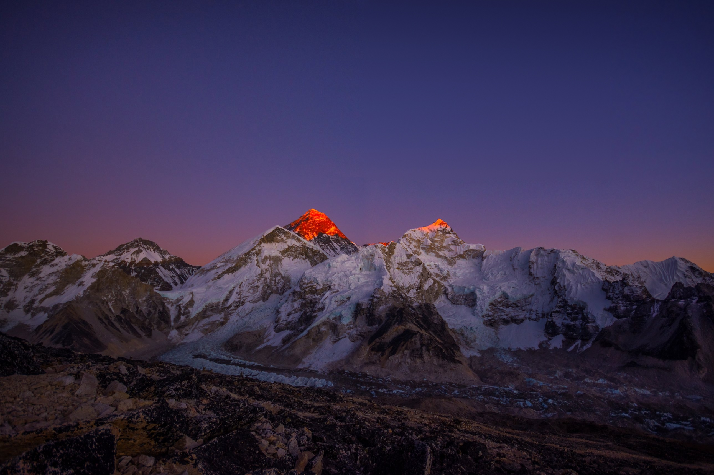
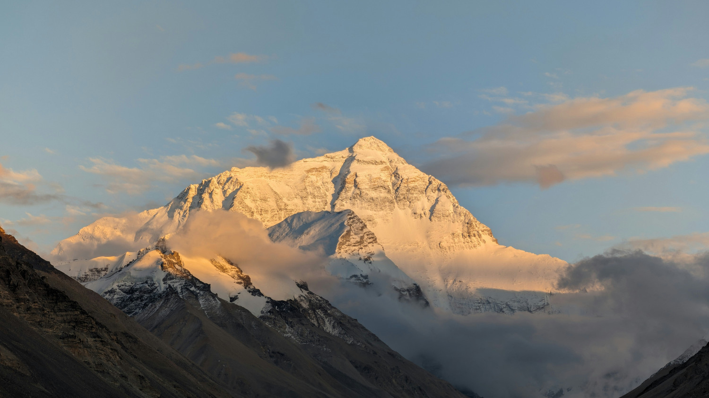
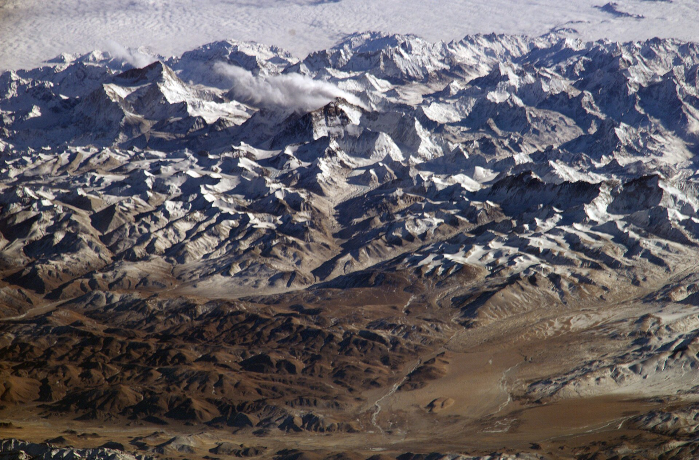
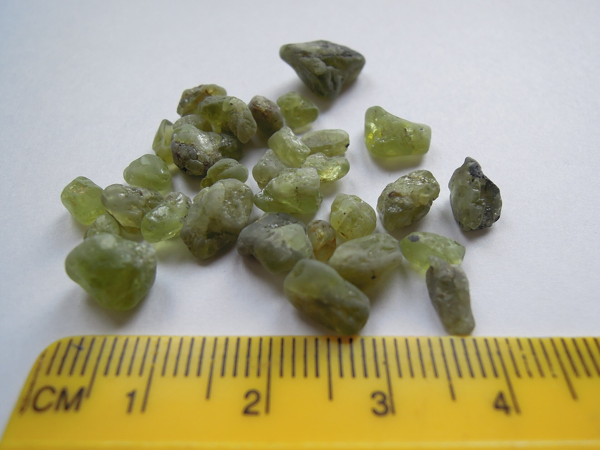
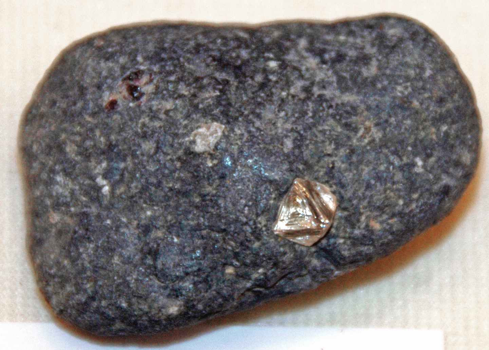

Journey to the Center of the Earth
You’re standing on the highest point on Earth. Scroll to follow the trail straight down, through the crust, the mantle and the liquid outer core, to the edge of the solid inner core.
Scroll to start the descentThe Summit
+8,849 m · below −30 °C
Everest is the highest point on Earth, and its summit rocks are uplifted ocean sediments full of marine fossils.
- Summit elevation is 8,849 m (29,032 ft), on the Nepal–China (Tibet) border.
- Winds are over 160 km/h (100 mph), temperatures regularly drop below −30°C (−22°F), and oxygen is about one third of the sea-level amount.
- Still rising about 2 mm (0.08 in) per year, and fits evidence that the Indian plate is still subducting.
- Why Everest is the tallest and not a nearby peak is probably “just luck”.

The Crust
0–100 km deep
Earth’s interior is layered into crust, mantle, liquid outer core and solid inner core.
- Crust: about 0–100 km deep.
The Himalayan-Tibetan Plateau is currently the world’s largest active continent-continent collision, formed when the Indian and Eurasian plates collided after the Neotethys Ocean closed by subduction.
- The Indian plate broke from Pangaea and moved north for about 80 million years before hitting southern Central Asia.
- Collision began 50–60 million years ago.
- Plates converge at 40–50 mm/year, and about half of that is absorbed across the Himalaya.
- Subduction is nonuniform and Indian crust underthrusts southern Tibet.

Push the plates
Drag the Indian plate north, or use the slider.
The Neotethys Ocean floor sinks beneath Eurasia as India moves north.
Upper Mantle
410 km deep · about 1,560 °C
Mantle: extends to 2,900 km depth from the crust, with a seismic discontinuity at 410 km and the top of the lower mantle at 670 km.
- up to 200 kmBase of the plates1,300–1,500 °C
- 410 kmOlivine → wadsleyiteA seismic discontinuity, about 1,560 °C
- 420–440 kmA diamond’s inclusionsGarnet, 10-Å phase, ilmenite, liebermannite
- 670 kmTop of the lower mantleAbout 1,700 °C
A diamond from 420–440 km
Press the button to see the four minerals sealed inside it.
- Bottom of tectonic plates (up to 200 km deep): 1,300–1,500°C; 410 km discontinuity: about 1,560°C.
- Minerals: the 410 km boundary is tied to the olivine-wadsleyite transition; a 420–440 km diamond inclusion holds garnet, 10-Å phase, ilmenite and liebermannite.


Lower Mantle
670–2,900 km deep · about 1,700 °C at the top
Heat from Earth’s interior drives slow flow in the mantle, and that flow moves the plates.
- Top of the lower mantle (670 km): about 1,700°C.
- Cold sheets of downwelling material (“cold curtains”) sink into the deep interior, imitating subducted slabs.
- Plate motion can change abruptly: in a convection model, a reorganization took about 6–8 million years as heat built up around a mature downwelling until its buoyancy overcame the downward pull and pushed a plate off course.
Outer Core
2,900–5,100 km deep · about 3,700 °C
Core: the outer core is liquid iron-nickel, and the inner core boundary lies at 5,100 km depth.
- Base of the mantle (2,900 km): about 2,300°C, then about 3,700°C in the outer core.
- Temperatures at a given depth can vary by several hundred degrees since they are estimated, not measured directly.
Illustrative: molten iron-nickel in motion
Edge of the Inner Core
5,100 km deep · about 6,000 °C · end of the trail
Inner core boundary (5,100 km): about 6,000°C, close to the temperature at the Sun’s surface.
- Earth’s interior is heated by two sources: residual heat from Earth’s formation and the decay of radioactive isotopes such as potassium. The deeper we go, the hotter it gets.
You reached the edge of the inner core.
Interior heat sustains plate tectonics, which shape Earth’s surface over billions of years.
That heat keeps the mantle flowing, the flow moves the plates, and the Indian plate’s push north is what lifted ocean-floor rock to the top of Everest.
- Crust0–100 km
- Upper mantleto 670 km
- Lower mantle670–2,900 km
- Outer core2,900–5,100 km
- Inner corefrom 5,100 km
Sources
- Guerrero, Joshua M., Chad W. Fairservice, Pejvak Javaheri, Julian P. Lowman, and Paul J. Tackley. 2025. “A Rapid Tectonic Plate Reorganization Event Driven by Changes at Subduction Locations in a Mantle Convection Model.” Scientific Reports 15 (1): 32316.
- Guo, Xiaoyu, Wenhui Li, Rui Gao, et al. 2017. “Nonuniform Subduction of the Indian Crust beneath the Himalayas.” Scientific Reports 7 (1): 12497.
- Huang, Shichun. 2025. “How Hot Is the Inside of the Earth?” Nature Reviews Earth & Environment 6 (7): 437.
- Scharping, Nathaniel. 2025. “How to Build the World’s Highest Mountain.” Eos 106.
- Turner, Bethan, Jennifer Jenkins, Rebecca Turner, et al. 2013. “Seismicity of the Earth 1900–2010 Himalaya and Vicinity.” Reston, VA: U.S. Geological Survey, Open-File Report 2010-1083-J, version 1.1.
Photographs: “Sunset view of Everest” by Nir B. Gurung, CC BY-SA 4.0; “Mt Everest from Tibet” by Alexander Zabrodskiy, Unsplash License; “Himalayas” by NASA, public domain; “Olivine Crystals from El Golfo on Lanzarote” by Jan Helebrant, CC BY-SA 2.0; “Diamond in kimberlite” by James St. John, CC BY 2.0. All via Wikimedia Commons except the Unsplash photo.


_(17440851983).jpg){kind=link}